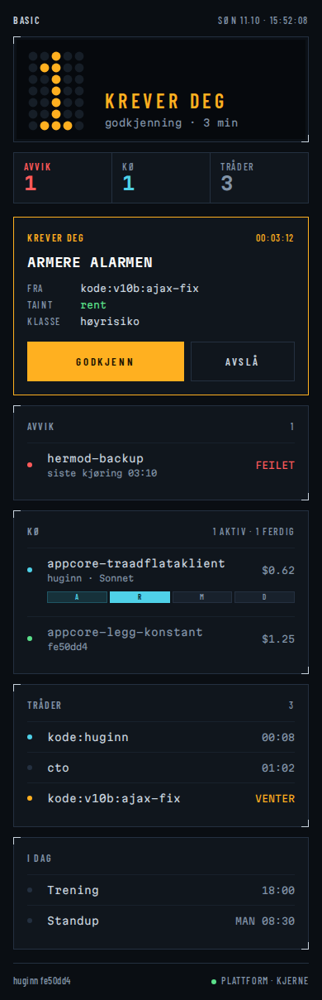
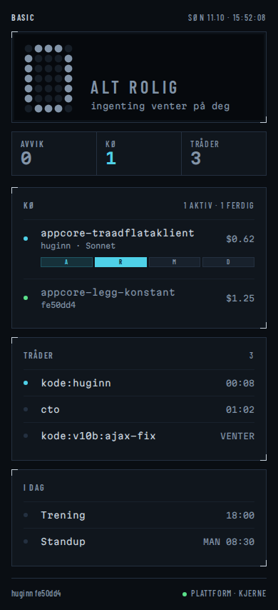
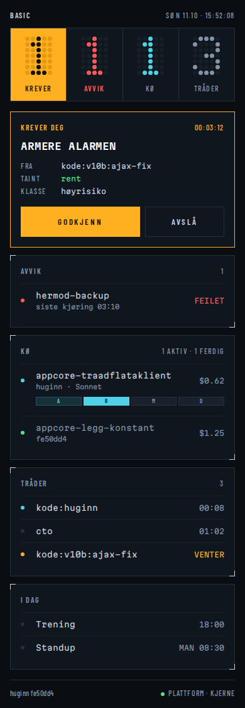
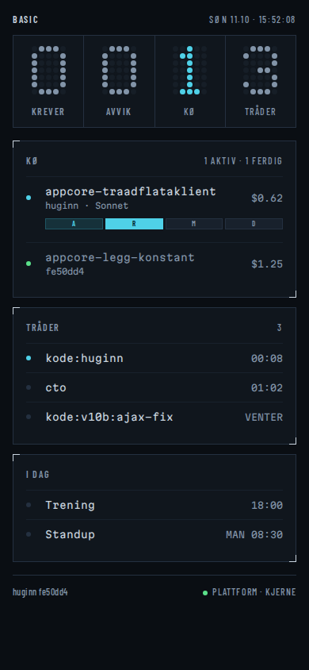

Alt under stripa er likt i begge, bare toppen er forskjellig. Hver er vist på en dag med avvik og på en rolig dag. Trykk på et bilde for den levende siden. Runde 1
Én stor punktmatrise-avlesning øverst. «Krever deg» er heroen, så lampen for den er fjernet fra stripa; avvik, kø og tråder er tre lamper under.


Annunciator-stripa blir fire punktmatrise-avlesninger i en rad. «Krever» er en ravgul lampe med mørke prikker; de andre er mørke med fargede prikker. Ingen enkelt hero.

